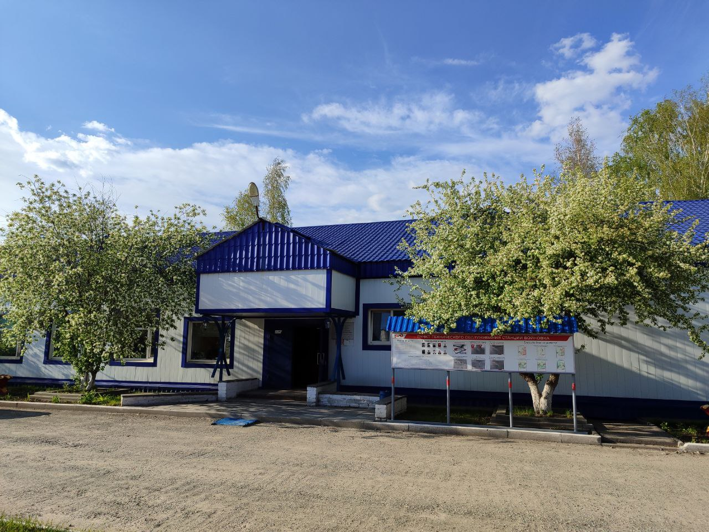
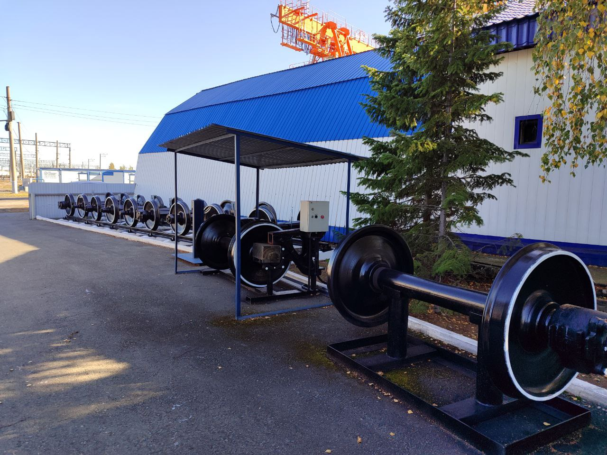
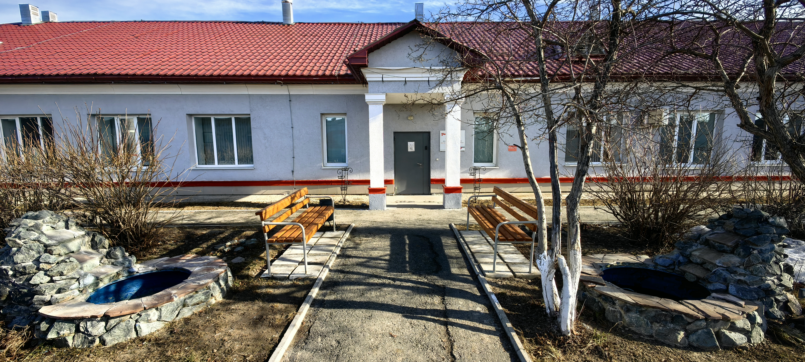
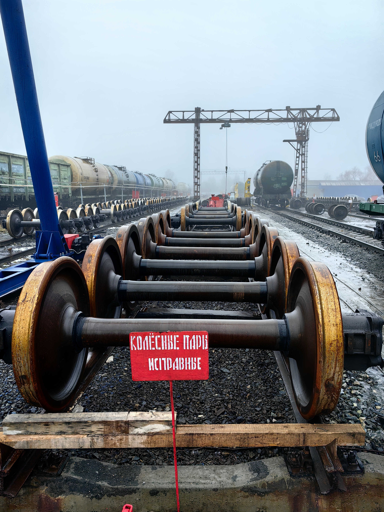

Пункты технического обслуживания
Наши пункты обеспечивают эксплуатационную работу на двух грузовых ПТО Войновка и Тобольск, и пассажирское ПТО Тюмень. ПТО Войновка (обслуживает чётную и нечётную систему) располагается на сортировочной станции Войновка.
Пункт технического обслуживания Войновка
Информация о ПТО
Адрес: г. Тюмень, ул. Путейцев, 1б
Начальник ПТО: Лабутин Игорь Владимирович
Почта: IVLabutin@svrw.rzd.ru
Телефон: +7(3452) 52-77-77
Мастер парка "А": Борболин Михаил Викторович
Телефон: +7(3452) 52-63-12
Мастер парка "О": Тульский Александр Анатольевич
Телефон: +7(3452) 52-57-00
Мастер парка "Т": Морозов Александр Анатольевич
Телефон: +7(3452) 52-57-76
Выполняемые работы:
- Контроль технического состояния вагонов при встрече с ходу;
- Централизованное ограждение составов;
- Технический осмотр вагонов;
- Выявление неисправностей вагонов требующих текущего отцепочного ремонта;
- Устранение неисправностей требующих безотцепочного ремонта вагонов;
- Ввод информации в систему на каждый неисправный вагон;
- Полное, сокращенное опробование автотормозов;
- Контроль технического состояния вагонов в составе поезда при отправлении со станции.
ПТО приемо - отправочных парков «А» и «Т» - предназначены для технологического обслуживания транзитных поездов, «О» - для технологического обслуживания поездов своего формирования.

Участок текущего отцепочного ремонта (ПТОР) Войновка
Информация о ПТОР
Адрес: г. Тюмень, ул. Путейцев, 1в
Мастер ПТОР: Парамонов Сергей Валерьевич
Почта: SVParamonov@svrw.rzd.ru
Телефон: +7(3452) 52-63-16
Производственные мощности
Задачи: Выполнение ТР-1 и ТР-2 (текущий ремонт вагонов) в объеме, требующем отцепки от состава на специализированных ремонтных путях.
Ключевые операции:
- Смена колесных пар и надрессорных балок;
- Ремонт автосцепного устройства;
- Сварочные и правильные работы по кузову;
- Устранение неисправностей тормозного оборудования.
Участок оборудован стационарными домкратами, козловыми кранами, пневмоколонками, сварочным оборудованием и сварочными колонками, оборудованием для газовой резки металла, приспособлением для снятия фрикционного аппарата, установкой для испытания тормозов после ремонта, стеллажами открытого и закрытого типа для хранения запасных частей, материалов, приспособлений, инструмента общего пользования.

Пункт технического обслуживания Тобольск
Информация о ПТО
Адрес: г. Тобольск, мкр. Менделеево,
Начальник ПТО: Семериков Николай Викторович
Почта: NVSemerikov@svrw.rzd.ru
Телефон: +7(3456) 22-63-29
Мастер парка: Петрусь Станислав Александрович
Телефон: +7(3456) 26-22-22
Выполняемые работы:
- Контроль технического состояния вагонов при встрече с ходу;
- Централизованное ограждение составов;
- Технический осмотр вагонов;
- Выявление неисправностей вагонов требующих текущего отцепочного ремонта;
- Устранение неисправностей требующих безотцепочного ремонта вагонов;
- Ввод информации в систему на каждый неисправный вагон;
- Полное, сокращенное опробование автотормозов;
- Контроль технического состояния вагонов в составе поезда при отправлении со станции.

Участок текущего отцепочного ремонта (ПТОР) Тобольск
Информация о ПТОР
Адрес: г. Тобольск, улл. Мелиораторов, д. 135/2
Мастер ПТОР: Лёвушкин Илья Андреевич
Почта: LevushkinIA@svrw.rzd.ru
Телефон: +7(3452) 56-24-20
Специализация участка
Особенности: ПТОР Тобольск играет стратегическую роль в обслуживании нефтехимических грузов.
Работа с цистернами: Участок специализируется на подготовке и ремонте вагонов-цистерн под налив нефтепродуктов и сжиженных газов.
Ключевые операции:
- Смена колесных пар и надрессорных балок;
- Ремонт автосцепного устройства;
- Сварочные и правильные работы по кузову;
- Устранение неисправностей тормозного оборудования.
Участок оборудован стационарными домкратами, козловыми кранами, пневмоколонками, сварочным оборудованием и сварочными колонками, оборудованием для газовой резки металла, приспособлением для снятия фрикционного аппарата, установкой для испытания тормозов после ремонта, стеллажами открытого и закрытого типа для хранения запасных частей, материалов, приспособлений, инструмента общего пользования.

Пункт технического обслуживания Ишим
Информация о ПТО
Адрес: г. Ишим, ул. Чернышевского, д. 11
Начальник пункта: Шершнев Андрей Александрович
Почта: ShershnevAA@svrw.rzd.ru
Телефон: +7(3452) 52-77-77
Выполняемые работы:
- Контроль технического состояния вагонов при встрече с ходу;
- Централизованное ограждение составов;
- Технический осмотр вагонов;
- Выявление неисправностей вагонов требующих текущего отцепочного ремонта;
- Устранение неисправностей требующих безотцепочного ремонта вагонов;
- Ведение необходимых учетно-отчетных форм и графиков исполненной работы;
- Ввод информации в систему на каждый неисправный вагон;
- Полное, сокращенное опробование автотормозов;
- Контроль технического состояния вагонов в составе поезда при отправлении со станции;

Пункт технического обслуживания Тюмень (пассажирский)
Информация о пункте
Адрес: г. Тюмень, ул. Привокзальная, д. 30/2
Начальник пункта: Плесовских Вадим Николаевич
Почта: PlesovskihVN@svrw.rzd.ru
Телефон: +7(3452) 52-57-01
Мастер парка: Орлов Сергей Геннадевич
Телефон: +7(3452) 52-77-77
Специализация участка
Особенности: ПТО на станции Тюмень предназначен для контроля технического состояния пассажирских вагонов, своевременного и качественного выявления и устранения технических неисправностей пассажирских вагонов транзитных, местных поездов, местных, оборотных поездов по станции Тюмень, а также отдельных цельнометаллических пассажирских вагонов общесетевой эксплуатации и специального назначения, предъявляемых по план - наряду, для экипировки водой пассажирских вагонов, твердым топливом.
Выполняемые работы:
- Контроль технического состояния вагонов при встрече с ходу;
- Централизованное ограждение составов;
- Технический осмотр вагонов с пролазкой;
- Выявление и устранение неисправностей вагонов требующих текущего отцепочного ремонта;
- Выявление и устранение неисправностей требующих безотцепочного ремонта вагонов;
- Полное, сокращенное опробование автотормозов;
- Ведение необходимых учетно-отчетных форм и графиков исполненной работы;
- Контроль технического состояния вагонов в составе поезда при отправлении со станции;
- Экипировка пассажирских вагонов водой.